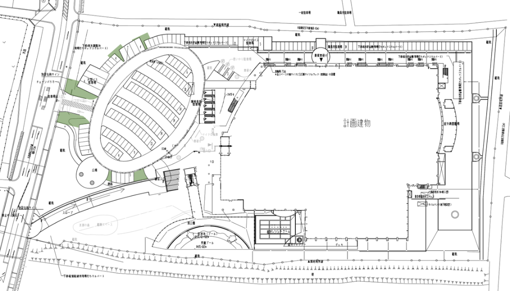
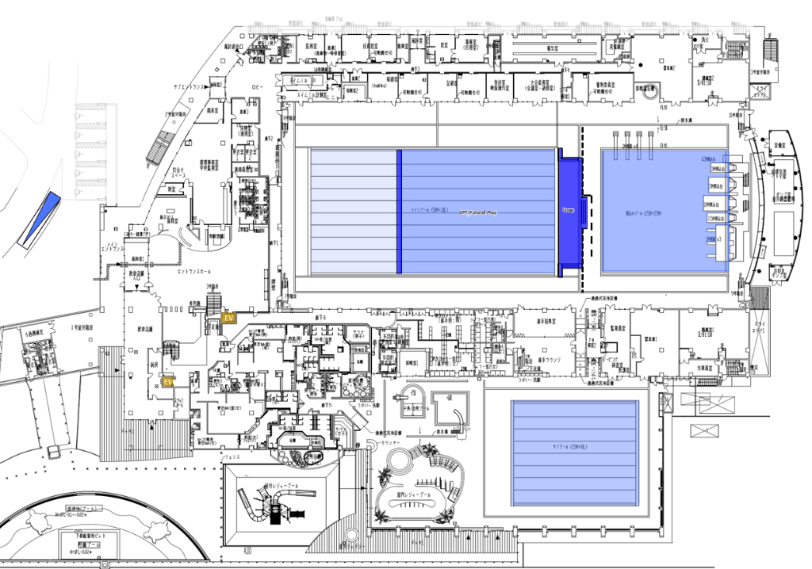
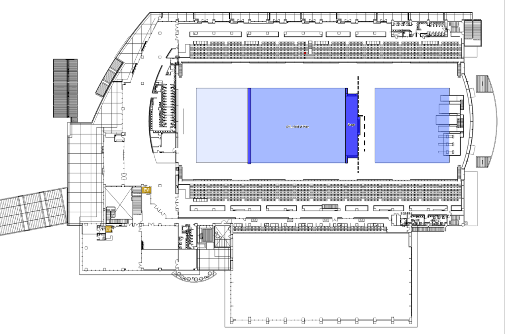

屋外
1階
2階
📍 部屋
🛡️ ACP
✏️ ピン編集
💾 保存/出力
🔄 復元
🌙
🔍
📍 ピン編集モード ON
+
−
⟲



💡 オフライン会場マップ案内
OFFLINE ACTIVE
マップ上の
📍 部屋ピン
または
🛡️ ACP (アクセスポイント)
をタップ/ホバーすると、詳細情報がポップアップおよび画面下に表示されます。
ヘッダーのレイヤーメニュー（📍 部屋 / 🛡️ ACP）で表示切り替えができます。
📍 部屋・ACPの追加・編集
✕
種別:
📍 部屋
🛡️ ACP
名称 (部屋名 / ACP名): *
部屋コード / ACPコード:
英語名称 (任意):
担当部署:
フロア:
屋外
1階
2階
中心X座標 (%):
中心Y座標 (%):
枠の横幅 (W %):
枠の縦幅 (H %):
🛡️ ACP運用形態 ＆ 重要度カラー設定:
👤 有人ACP (人が立つ / スタッフ配置)
無人ACP (人が立たない)
ドット表示色:
サイバーシアン (無人)
🟡 アンバーゴールド (有人・スタッフ配置)
🔴 ビビッドレッド (最重要・厳戒)
🟣 パープル (VIP・要人専用)
🟢 エメラルド (一般開放)
🎨 カラーピッカーで自由指定
ACP通行許可レベル / アクセス権限 (プルダウン選択):
Level 1 (競技エリア / FOP・選手・役員)
Level 2 (選手・チーム役員エリア / Athletes & Team Leaders)
Level 3 (IF/AF 役員・VIPエリア / IF & AF Family)
Level 4 (報道・プレスエリア / Press & Photographers)
Level 5 (放送・HB/RHBエリア / Broadcasters & HB)
Level 6 (大会運営・スタッフエリア / Workforce & Staff)
Level RED (レッドゾーン / Secure Operations)
Level BLUE (ブルーゾーン / Athlete Warm-up)
Level WHITE (ホワイトゾーン / Compound & Logistics)
Level FOH (観客・一般エリア / Front of House)
Level SACD (特別通行証 / Special Access)
ALL (全エリアアクセス可 / All Access)
✏️ カスタム入力（手動指定）
📄 関連PDF資料・マニュアル (任意):
概要・説明:
🗑️ 削除
キャンセル
💾 保存
💾 データ保存・出力
✕
編集した最新データはブラウザに自動保存されています。
別の端末やファイル本体へ反映する場合は、最新の
data.js
をダウンロードして上書き配置できます。
📄 最新マスターデータを js/data.js としてダウンロード
📋 クリップボードに最新データをコピー
📝 データ直接表示（コピー＆ペースト用）:
全選択
🔄 初期データ状態にリセット（保存キャッシュ消去）